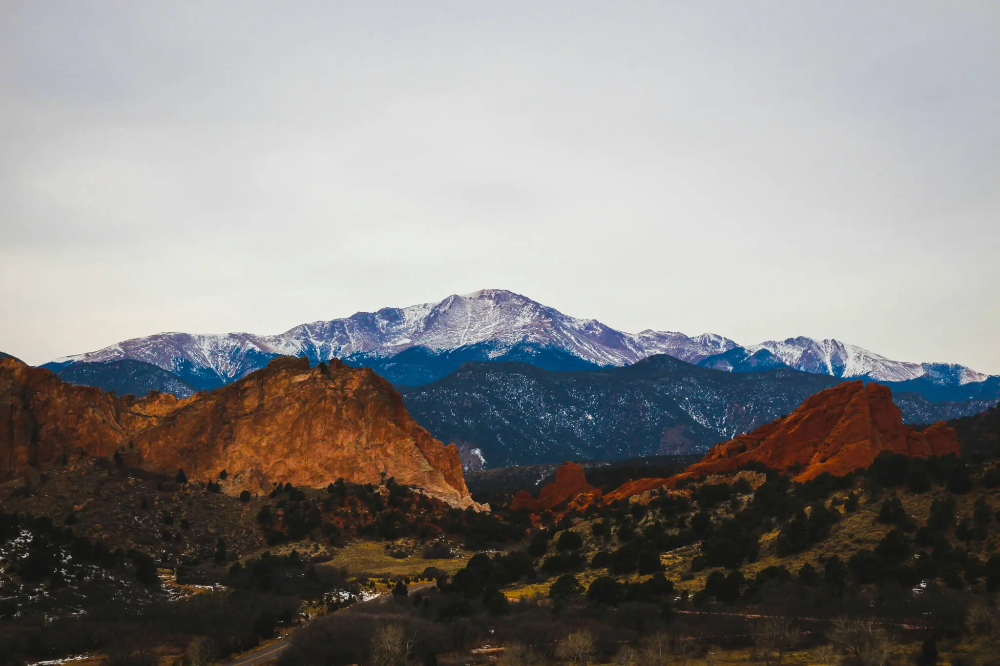

01 · IDENTITY
Business and field-team apparel
For staff pieces or branded workwear, share the garment type, logo use, role variations, and reorder expectations so the initial run can become a consistent program.
Monument & Tri-Lakes · Custom apparel
Custom screen printing Monument CO for Tri-Lakes business apparel, merch, events, and groups. Share your artwork, quantity, and deadline for an ARK quote.

A clear Monument project brief
Monument projects often bring together small-business identity, community events, recreation groups, and practical staff apparel. The right apparel plan starts with the job the garments need to do—whether that is a first merch run, a recurring program, or a time-sensitive event order.
ARK is based in Colorado Springs and serves Monument and the broader Tri-Lakes area. Send the artwork, garment direction, quantity, print locations, and in-hands date through the quote form, and the production conversation can begin with the decisions that matter.

Plan the project, then choose the print path
These are practical planning paths, not claims about ARK clients, schools, teams, or organizations in Monument.
01 · IDENTITY
For staff pieces or branded workwear, share the garment type, logo use, role variations, and reorder expectations so the initial run can become a consistent program.
02 · COMMUNITY
A group order is easier to manage when the quote includes the date, size spread, artwork, print locations, and distribution plan from the beginning.
03 · MERCH
For a merch concept, describe the hand feel, coverage, colorway, first-run quantity, and the way the garment should represent the brand after repeat wear.
Build a usable quote
A complete request keeps garment, artwork, finish, and delivery decisions from getting separated later in the process.
Quote-first workflow

Choose the finish after the brief
Screen printing can be a strong choice for many repeatable programs and group runs. Other projects may point toward DTF, embroidery, water-based ink, or discharge. The best route is determined by the artwork, garment, coverage, quantity, and finish—not just the neighborhood name.
Use the quote form to describe the project. These service pages can help you understand the production conversation before you submit it.
Questions before you quote?
Short answers to the decisions that make a custom-apparel request easier to scope.
Yes. ARK is based in Colorado Springs and serves Monument and the Tri-Lakes area. Use the quote form to confirm the details of your particular project.
Include the date, artwork, quantity, garment type, size range, print locations, and any distribution or deadline considerations.
Yes. The artwork, quantity, garment, color count, and requested finish all affect the production choice.
A finished file is helpful, but a clear logo, concept, or artwork direction is enough to begin discussing the production options.
Start your project
Share your artwork, garment direction, quantity, print locations, and deadline. ARK will turn those details into a clear production recommendation for your project.